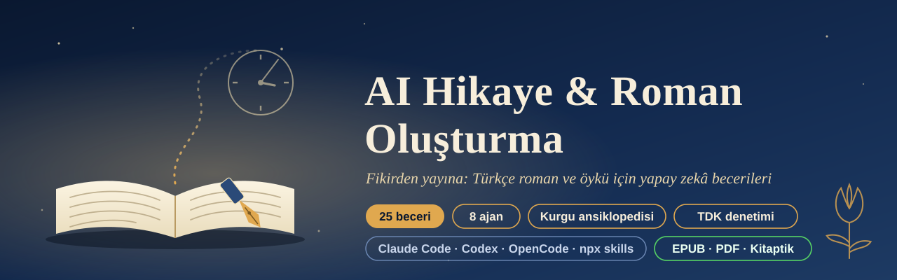
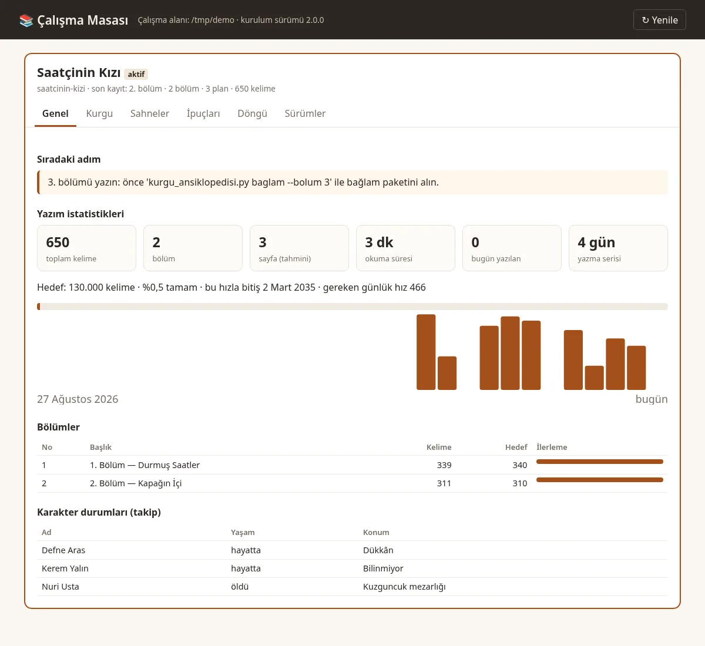
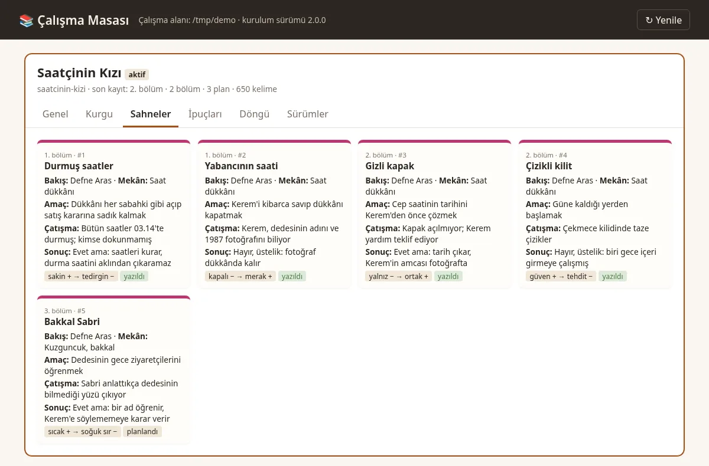
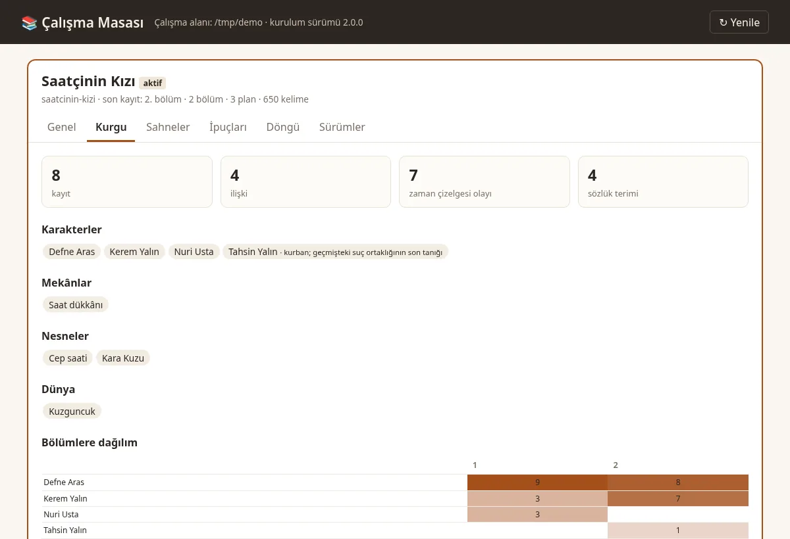
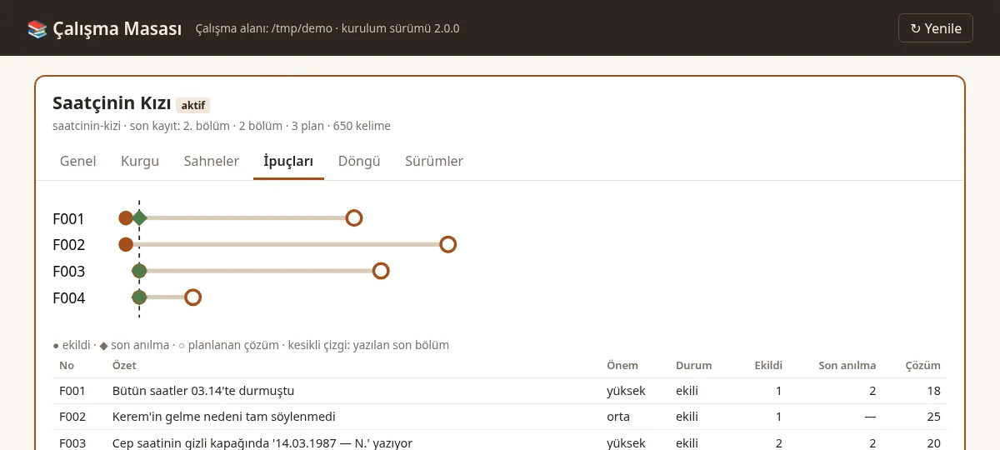
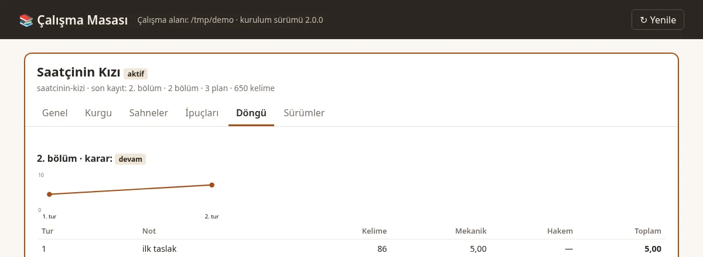
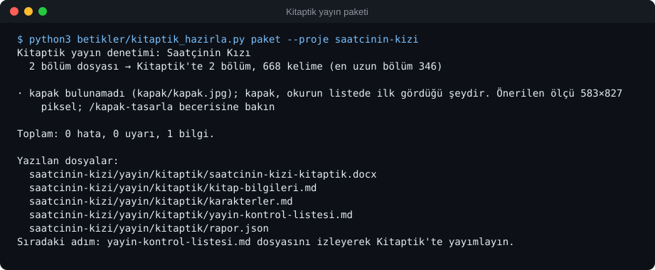

Planlama
Üç perde, kahramanın yolculuğu, serim-düğüm-çözüm, yedi nokta ve kar tanesi; sahne kartları ve mantar pano.
Kar tanesinden sahne kartına, kurgu ansiklopedisinden ipucu defterine, yazar onaylı revizyondan EPUB, DOCX, PDF’e ve Kitaptik’teki okura kadar: bir romanın bütün yolu, kullandığınız yapay zekâ ajanının içinde ve kendi dosyalarınızda.

Üç perde, kahramanın yolculuğu, serim-düğüm-çözüm, yedi nokta ve kar tanesi; sahne kartları ve mantar pano.
Karakter (mülakatıyla), mekân, nesne, grup, zaman çizelgesi, ilişki ve sözlük; bölümlere dağılım ısı haritası.
Yazar gerçeği / okur bilgisi ayrımı, ipucu defteri (vade, son anılma), katmanlı özetler.
Mekanik puan + bolum-hakemi ajanı, plato tespiti, Elo bölüm turnuvası, ses izi karşılaştırması.
TDK yazımı, Türkçe yapay zekâ kalıpları, Ateşman okunabilirliği, cümle ritmi; Osmanlı ve erken Cumhuriyet dönem denetimi.
Kitap ve günlük hedef, seri, bitiş tahmini; anlık görüntü, kelime düzeyinde fark, güvenli geri yükleme.
EPUB 3 (EPUBCheck hatasız), DOCX ve ODT, A5 baskı PDF’i, TXT, Markdown; yayınevi paketi, seslendirme metni.
DOCX, ODT, EPUB, TXT ve Markdown taslakları Türkçe bölüm başlıklarını tanıyarak böler.
Yalnızca Python standart kitaplığı; betikler ağa çıkmaz, çalışma masası yalnızca 127.0.0.1.
Tüm örnek çıktılar depodaki örnek romandan (Saatçinin Kızı) gerçek komutlarla üretildi.
Yerel, salt okunur panel: Genel, Kurgu, Sahneler, İpuçları, Döngü, Sürümler.





Gerisini hikaye yönlendiricisi halleder: yapı tartışması → plan → yazım → denetim → takip → yayın.
Claude Code’da iki komut; Codex, OpenCode ve diğerleri için aşağıdaki sekmeler.
Boş bir klasörde /hikaye-kurulum yazın, sonra yeni bir oturum açın.
“Kuzguncuk’ta geçen, amatör dedektifli bir polisiye başlatmak istiyorum. Önce yapıyı tartışalım.”
Depodaki örnek romandan aynı sahne. ai_kalip_denetle.py taslakta 10 bulgu, düzeltilmiş hâlde 0 bulgu verir. Denetçi bir yapay zekâ dedektörü değil, bir yazım denetleyicisidir.
Defne derin bir nefes aldı. Kalbi hızla çarpıyordu ve içini bir ürperti kapladı.
Korku yoktu. Tereddüt yoktu. Geri dönüş yoktu.
Zaman durmuş gibiydi; sessizlik odayı doldurdu ve kelimelerle anlatılamaz bir gerilim havada asılı kaldı.
Ve o an anladı ki hiçbir şey eskisi gibi olmayacaktı.
Defne saati tezgâha bıraktı, parmaklarını önlüğüne sildi.
— Açacak mısın? dedi Kerem. Kapının eşiğinden ayrılmamıştı.
Defne cevap vermedi. Çay ocağı fokurdadı, kimse kalkıp altını kısmadı.
İkinci kapak tık diye kalktı. İçinde, katlanmış bir tren bileti duruyordu: Haydarpaşa–Ankara, 14 Mart 1987.
Python 3.11 ya da üstü gerekir; denetim betikleri yalnızca standart kütüphaneyi kullanır.
# Claude Code içinde
/plugin marketplace add cumabozkurt/ai-hikaye-roman-olusturma
/plugin install ai-hikaye-roman-olusturma@ai-hikaye-roman-olusturma# ya da terminalden
claude plugin marketplace add cumabozkurt/ai-hikaye-roman-olusturma
claude plugin install ai-hikaye-roman-olusturma@ai-hikaye-roman-olusturmacodex plugin marketplace add cumabozkurt/ai-hikaye-roman-olusturma codex plugin add ai-hikaye-roman-olusturma@ai-hikaye-roman-olusturma
Beceriler $roman-yaz ya da /skills ile çağrılır.
npx skills add cumabozkurt/ai-hikaye-roman-olusturma -g -a claude-code codex opencode -y
git clone https://github.com/cumabozkurt/ai-hikaye-roman-olusturma.git cd ai-hikaye-roman-olusturma bash betikler/kur.sh
# Windows
powershell -ExecutionPolicy Bypass -File betikler\kur.ps1Ardından her yazım projesinde bir kez /hikaye-kurulum (Codex’te $hikaye-kurulum) çalıştırın ve yeni bir oturum açın. Ev sahibine göre ayrıntılar: docs/ev-sahipleri.md
Kitaptik, Türkiye’den erişilebilen Türkçe kitap yazma ve okuma platformudur. /kitaptik-yayimla bitmiş romanınızı yazar ekranına hazırlar; size yalnızca yüklemek kalır.

Uzun soluklu, çok karakterli romanlarda süreklilik ve yapı kontrolü.
Düzenli yayın, bölüm planı ve Kitaptik’e hazır toplu yükleme paketi.
Ölçen denetçiler, okunabilirlik raporları ve yayınevi paketi.
Ücretsiz kurun, ilk bölümü bugün planlayın; bitirdiğinizde Kitaptik’te okurla buluşun.